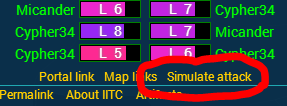

In case you are not using IITC... you should. Go here and find out about it.
There is a plugin for IITC that can export the portal's exact data into IPAS to simulate an attack on the portal
Previously, I provided the pluging for using IITC with IPAS here as well - but actually the version of the plugin in the IITC repository is even better maintained than mine here, so please use the version from there
